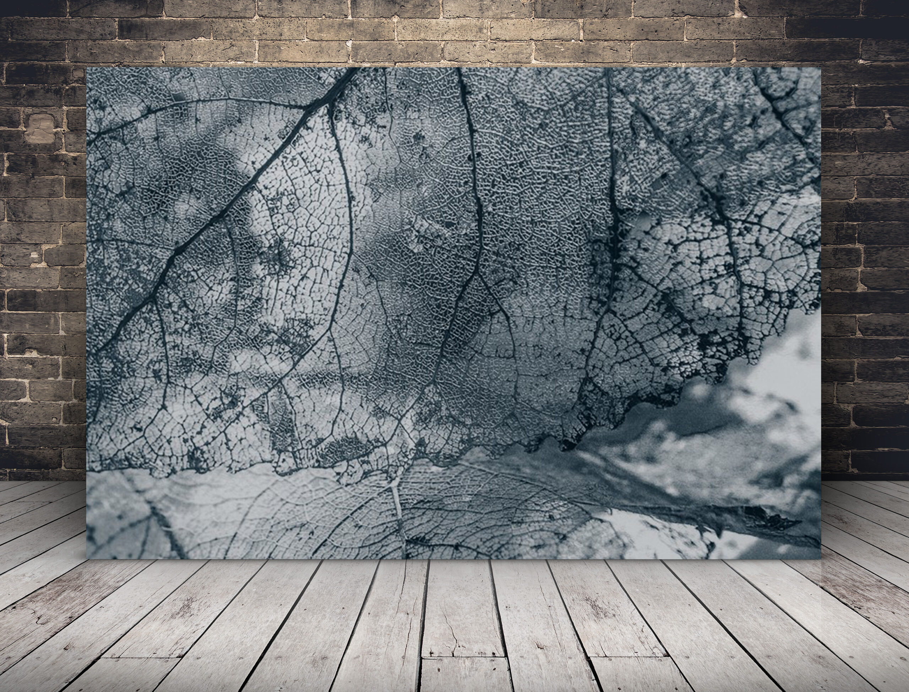

PRZESTRZEŃ KSZTAŁTUJE
umysł.
Odrzucamy chwilowe trendy na rzecz ponadczasowego rzemiosła. Nasza filozofia opiera się na założeniach neuroarchitektury – badamy, jak proporcje, światło i materiały wpływają na ludzki układ nerwowy.

01
Światło
Traktujemy naturalne światło jako najważniejszy materiał budowlany. Kształtuje ono rytm dobowy i definiuje geometrię przestrzeni.
02
Materia
Wybieramy naturalne, haptyczne materiały, które pięknie się starzeją. Kamień, drewno i len angażują zmysły i wprowadzają spokój.
03
Redukcja
Mniej, ale lepiej. Eliminujemy przebodźcowanie, tworząc minimalistyczne układy, które pozwalają myślom swobodnie płynąć.